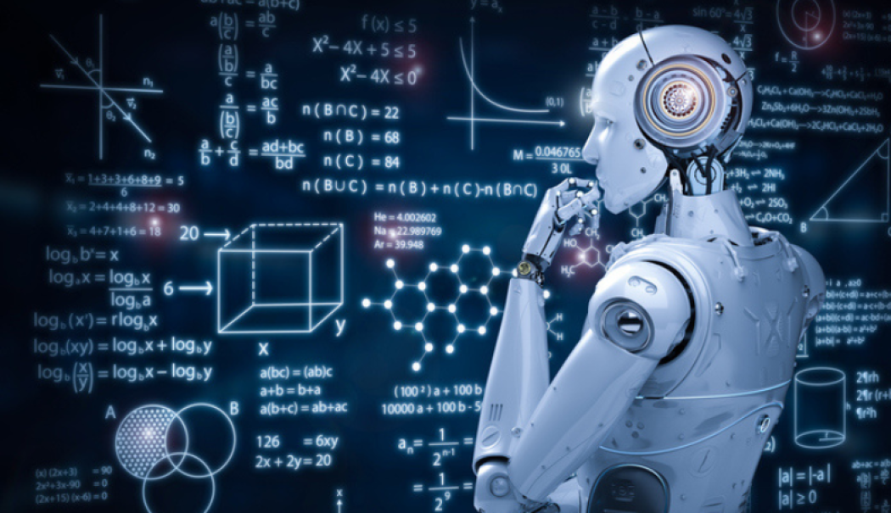

L'Intelligence Artificielle
L’intelligence artificielle (IA) est la capacité des machines à imiter l’intelligence humaine. Elle se manifeste par le traitement du langage naturel, la reconnaissance d’image, l’apprentissage automatique (machine learning), etc. L’IA transforme profondément les domaines comme la santé, la finance, les transports et l’industrie.
Pour en savoir plus, visitez cet article sur l’intelligence artificielle.
🤖🧠 L’intelligence artificielle : quand la machine commence à penser 🚀🔬
L’intelligence artificielle (IA) n’est plus une idée de science-fiction. C’est aujourd’hui une réalité qui transforme profondément notre manière de vivre, de travailler et même de penser.
Des assistants vocaux aux voitures autonomes, des algorithmes de recommandation aux diagnostics médicaux, l’IA est déjà partout autour de nous. Elle analyse, apprend, prédit, optimise. Et surtout, elle ouvre un monde de possibilités.
🔍 Pourquoi l’IA fascine autant ?
- Parce qu’elle est capable de traiter des millions de données en un clin d'œil.
- Parce qu’elle apprend et s’améliore toute seule grâce à l’apprentissage automatique.
- Parce qu’elle permet de résoudre des problèmes trop complexes pour l’homme seul.
- Parce qu’elle réinvente tous les secteurs : santé, finance, agriculture, éducation, cybersécurité, et bien plus.
💡 Étudier l’intelligence artificielle, c’est plonger dans un univers mêlant mathématiques, statistiques, programmation, mais aussi éthique et philosophie. Car la vraie question n’est plus seulement : “Que peut faire l’IA ?” mais aussi : “Que doit-elle faire ?”
🎯 Derrière chaque IA performante, il y a des modèles bien entraînés, des données bien traitées, mais surtout des esprits brillants et responsables qui imaginent un avenir où l’IA sert l’humain.
🚀 L’IA ne remplace pas l’intelligence humaine. Elle l’augmente. Et c’est cette collaboration entre l’homme et la machine qui rend cette révolution technologique aussi passionnante.
🔁 Et toi, comment comptes-tu utiliser l’intelligence artificielle pour améliorer le monde ?
#IntelligenceArtificielle #AI #MachineLearning #DeepLearning #FuturTechnologique #Données #ÉthiqueDeLIA #RévolutionNumérique